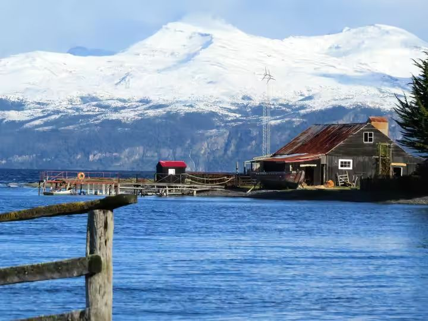
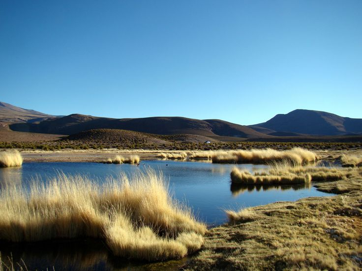

Southern Traditions
PATAGONIA ESTANCIAS
In the vast landscapes of southern Chile, Patagonian estancias (ranches) offer travelers a chance to step into gaucho traditions and rural life. These historic ranches, often family-owned for generations, preserve the culture of sheep farming and horseback riding across windswept pampas.
Guests can savor authentic lamb barbecues (asado al palo), join photo safaris to spot wildlife, and immerse themselves in the rustic charm of ranch life, all while surrounded by breathtaking views of fjords and glaciers.

High Andean Heritage
ALTIPLANO VILLAGES
High in northern Chile’s Andes, Aymara villages provide a window into Indigenous rural life shaped by altitude, tradition, and cosmology. Here, communities maintain ancestral practices of farming quinoa and potatoes, and celebrating festivals that honor Pachamama (Mother Earth).
Visitors experience the warmth of village hospitality, taste local cuisine, and witness rituals tied to the rhythms of the land, making the Altiplano a destination where cultural heritage and natural beauty converge.